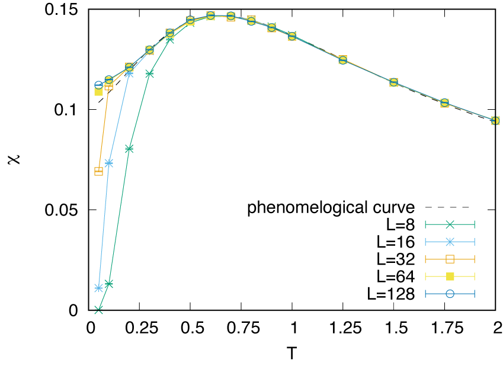

3.3. DSQSS による moller 計算の例¶
このチュートリアルについて¶
これは、量子多体問題の経路積分モンテカルロ法を実行するためのオープンソースソフトウェアパッケージである DSQSS を用いた moller の例です。この例では、周期境界条件下の \(S=1/2\) (DSQSSの用語では \(M=1\)) および \(S=1\) (\(M=2\)) 反強磁性ハイゼンベルク鎖の磁気感受率 \(\chi\) の温度依存性を計算します。 moller を使用することで、異なるパラメーター (\(M, L, T\)) の計算を並列に実行します。
この例は 公式チュートリアルの一つ に対応しています。
準備¶
moller （HTP-tools）パッケージと DSQSS がインストールされていることを確認してください。このチュートリアルでは、ISSP のスーパーコンピュータシステム ohtaka を使用して計算を実行します。
実行方法¶
データセットを準備する
このパッケージに含まれるスクリプト
make_inputs.shを実行します。$ bash ./make_inputs.sh
これにより、
outputディレクトリが作成されます（すでに存在する場合は、まず削除し、再度作成します）。outputの下には、各パラメーター用の作業ディレクトリ（例：L_8__M_1__T_1.0）が生成されます。ディレクトリのリストはlist.datファイルに書き込まれます。mollerを使用してジョブスクリプトを生成するジョブ記述ファイルを使用してジョブスクリプトを生成し、
job.shというファイル名で保存します。$ moller -o job.sh input.yaml
次に、
job.shをoutputディレクトリにコピーし、outputディレクトリに移動します。バッチジョブを実行する
ジョブリストを引数としてバッチジョブを送信します。
$ sbatch job.sh list.dat
状態を確認する
タスク実行の状態は
moller_statusプログラムによってまとめられます。$ moller_status input.yaml list.dat
結果を集める
計算が終了した後、結果を以下のようにして集めます。
$ python3 ../extract_result.py list.dat
このスクリプトは、\(M\), \(L\), \(T\), \(\chi\) の平均、および \(\chi\) の標準誤差を含む 5 列のテキストファイル
result.datに結果を書き込みます。結果を視覚化するために、GNUPLOT ファイル
plot_M1.pltおよびplot_M2.pltが利用可能です。$ gnuplot --persist plot_M1.plt $ gnuplot --persist plot_M2.plt


\(S=1/2\) と \(S=1\) AFH 鎖の主な違いは、励起ギャップが消失するか (\(S=1/2\))、残るか (\(S=1\)) のどちらかです。 これを反映して、非常に低温領域での磁気感受率は、有限になる (\(S=1/2\)) か、消失する (\(S=1\)) かのどちらかです。 \(S=1/2\) の場合には、有限サイズ効果によりスピンギャップが開き、そのため小さいチェーンの磁気感受率が低下します。